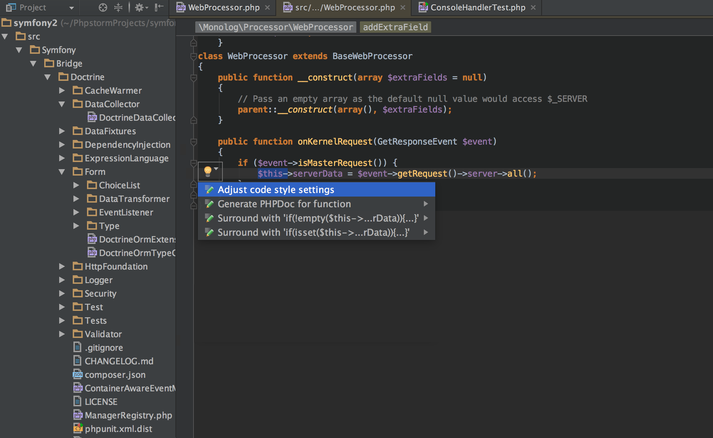
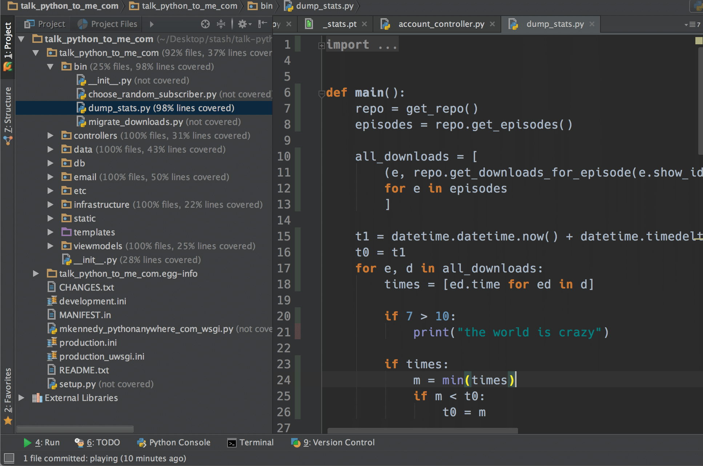
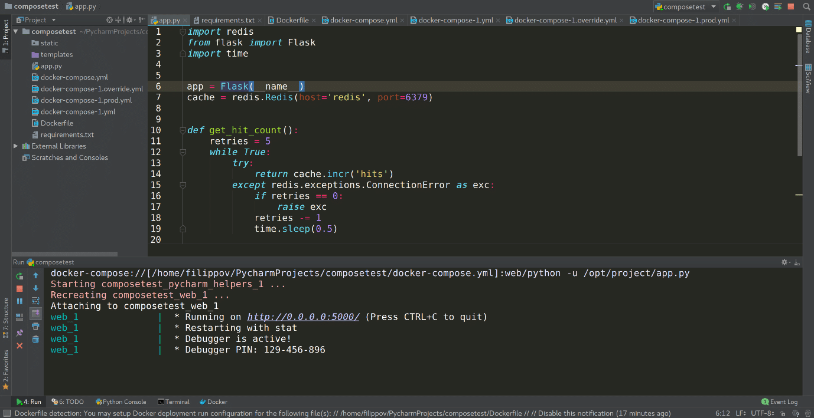
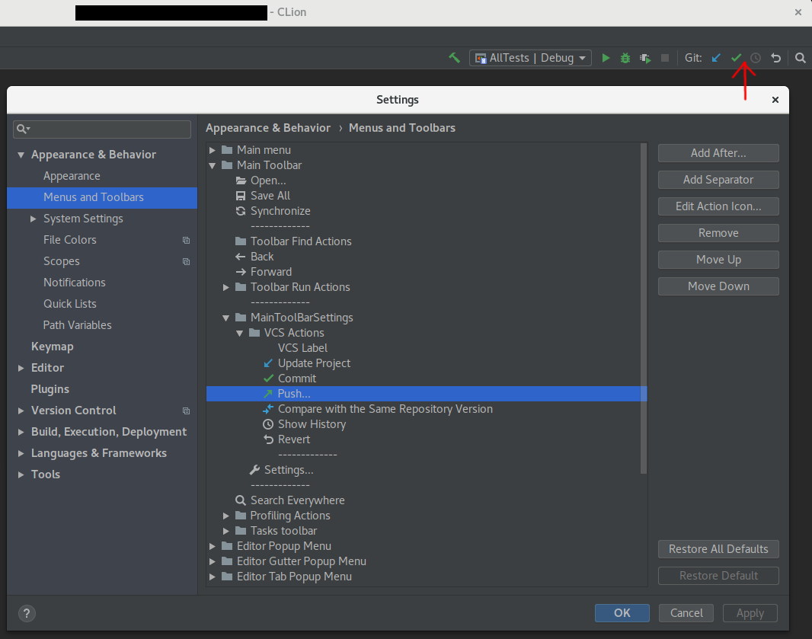

IDE’s¶

Introducción¶
Un IDE (Integrated Development Environment) es un software que ayuda a los desarrolladores a escribir códigos para desarrollar aplicaciones. Tiene una interfaz fácil de usar que consta de un editor y un compilador. Podemos escribir el código en la ventana del editor y compilarlo usando el compilador. En consecuencia, podemos ejecutarlo para verificar la salida del programa en el terminal de salida.
Un IDE facilita a los desarrolladores con muchas funcionalidades programar en varios idiomas. Así, se ha convertido en una de las herramientas imprescindibles para el desarrollo de diversas aplicaciones.
Herramientas¶
Text Editor¶
Escribimos programas en la ventana del editor de texto. Aquí podemos editar, depurar y comentar nuestros programas. También proporciona funciones como el predictor de texto que ayuda a corregir errores.
Project Editor¶
Un proyecto consta de diferentes archivos para diversas funcionalidades. Almacenamos estos archivos esenciales de un proyecto de software en la ventana del Editor de proyectos.
Output Terminal¶
El terminal de salida en un IDE muestra el resultado del programa.
Toolbar¶
Una barra de herramientas es un conjunto de opciones que están vinculadas a funcionalidades específicas como ver, ejecutar, debugging, etc. Ayuda a realizar varias operaciones en el programa que creamos.
La necesidad de un IDE¶
La velocidad y la eficiencia son los dos factores que afectan a todas las industrias. En esta era competitiva, se ha convertido en un desafío crear software rápido y escalable para los clientes. Aquí es donde un IDE inteligente gana el juego. Un IDE nos ayuda con las siguientes características:
Autocompletar¶
Esta función nos ayuda a corregir errores de sintaxis de inmediato. Sugiere las variables, palabras clave, funciones, bibliotecas y paquetes correctos para usar al escribir el código. Además, el esquema de color de un IDE resulta ser un gran activo. Ayuda a comprender el flujo de un programa. Podemos distinguir fácilmente entre variables y texto y entre funciones y clases, y así comprender la lógica del código.
Debugging¶
El debugging es el paso más importante para crear un software exitoso. El debugging del código implica probar y borrar todos los errores para que nuestro programa no se bloquee.
Gestión de archivos¶
Un proyecto consta de diferentes archivos con diferentes funcionalidades. Se convierte en una tarea necesaria colocar estos archivos en ubicaciones adecuadas para la ejecución del programa. Un IDE hace que la ubicación de todos los archivos de recursos de un proyecto sea más visible
Tipos de IDE¶
La creación de aplicaciones utilizando diferentes lenguajes de programación requiere varios tipos de IDE compatibles con los respectivos lenguajes de programación. En esta sección, veremos los diferentes tipos de IDE utilizados para el desarrollo en varios lenguajes.
Existen diferentes categorías de IDE, por ejemplo, usamos IDE para múltiples lenguajes de programación, desarrollo móvil y para lenguajes de programación particulares.
IDE para varios lenguajes¶
Hay muchos IDE disponibles que ayudan a programar en diferentes lenguajes. Podemos utilizar un único IDE para programar en varios lenguajes como C, C ++ o Java. Algunos de estos IDE se mencionan a continuación:
NetBeans¶
Es un IDE de código abierto que consta de varios paquetes y módulos útiles para el desarrollo. NetBeans admite varios idiomas como se indica a continuación:
C/C++
Java
Python
Ruby
PHP
JavaScript
Groovy
Eclipse¶
También es un software de código abierto utilizado para varios marcos de desarrollo. Se utiliza principalmente para el desarrollo de aplicaciones con Java. Los idiomas admitidos por Eclipse son:
Java
Python
C/C++
PHP
Perl
Ruby
COBOL
Haskell
Fortran
Aptana¶
Es un IDE popular utilizado para el desarrollo de aplicaciones web. Los lenguajes de programación admitidos por Aptana son:
Python
Ruby on Rails
Ajax
HTML
CSS
JavaScript
IDE de desarrollo móvil¶
Hay varios IDE que se utilizan para el desarrollo de aplicaciones móviles. Algunos de ellos se enumeran a continuación:
PhoneGap
Android Studio
IntelliJ IDEA
Visual Studio
Appcelerator
IDE para lenguajes particulares¶
Para programar exclusivamente en un idioma específico, hay varios IDE disponibles. Son los siguientes:
Java: JCreator
Python: IDLE
C/C++: CodeLite
R: RStudio